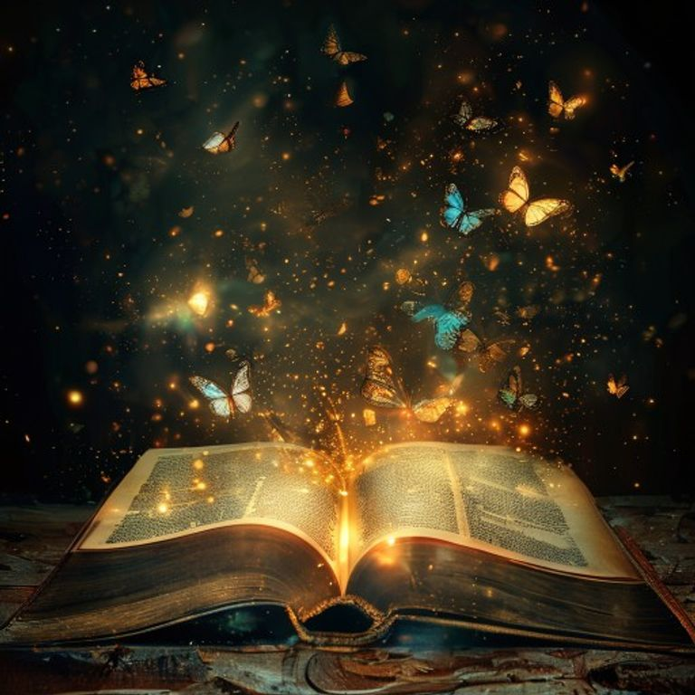

[ВИЗУАЛЬНЫЙ ПОСТ]

Иногда нужно разбиться, чтобы расцвести
Переломы — это не конец. Это начало чего-то нового. Позволь себе распасться и собраться заново. #визуал #вдохновение #психология
#22 visual • Канал Психология/Саморазвитие